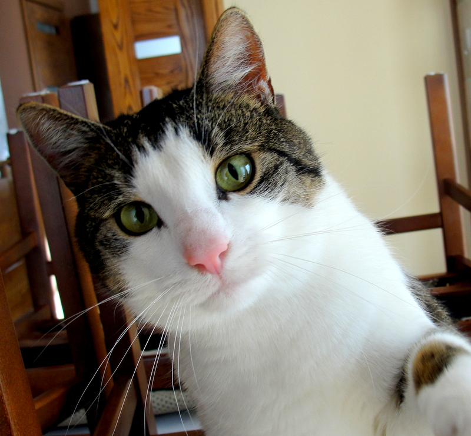

"Kотките живеят в близост до хората от преди поне 3500 години (въпреки че не са изцяло опитомени като кучетата). В Древен Египет котките са били използвани за пазачи на складираното зърно от мишки и други гризачи, като наказанието за убита котка в Древен Египет е било смърт. В наше време котките са едни от най-разпространените домашни любимци. Малък процент от тях (около 1%) са чистокръвни (с регистрирано родословие); останалите 99% са кръстоски между различни породи."
ако (погалиш котката){
"мърррр";
ако не
"мяъ мяу";
Домашната котка е в състояние да убие или изяде представители на няколко хиляди други животински вида. За сравнение повечето от големите котки се хранят с не повече от сто други вида. Въпреки това, поради малкия си размер, домашната котка е почти безобидна за хората; единствените рискове са от възможни инфекции при ухапване, в редки случаи – бяс. Исторически погледнато котките са голяма заплаха за екосистеми, които не са им родни и които нямат време да се адаптират към нахлуването им. В някои случаи котките са причинили или са допринесли за изчезването на някои животински видове.

Отглеждането на котка в домашни условия става все по-популярно, тъй като се смята, че това е много по-безопасно, защото я предпазва от рисковете на външния свят. Ако обмисляте да отглеждате такъв любимец на закрито, прочетете това ръководство, за да научите всичко, което трябва да знаете.
| Сладки котянца | |
|---|---|
|
|
|
|